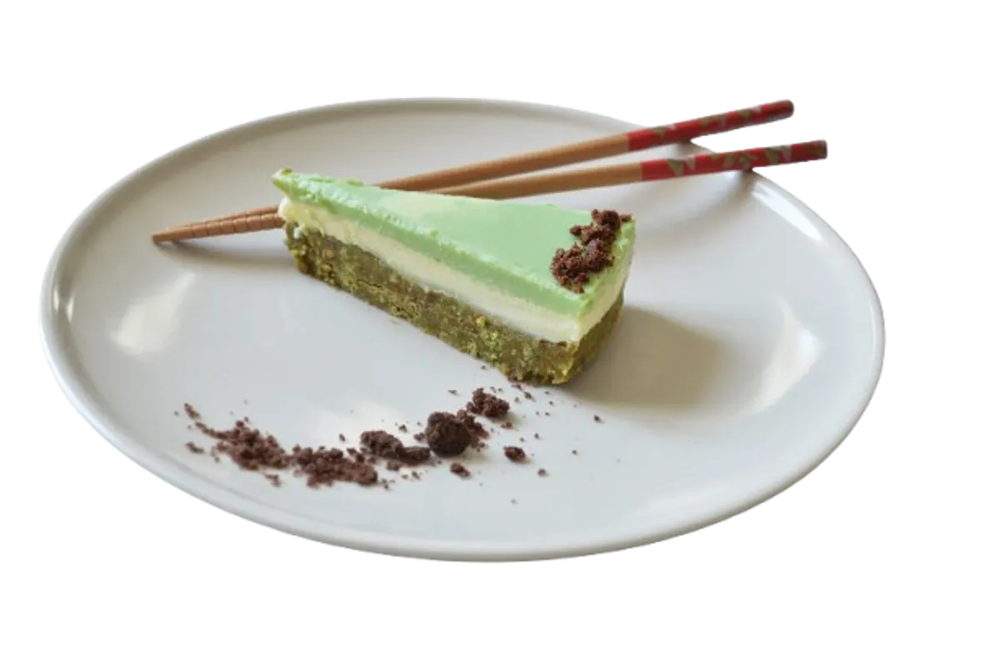
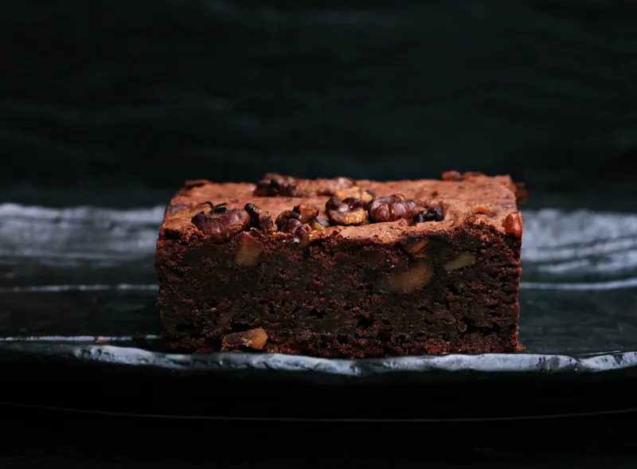

Descubre el mundo de los postres
Sumérgete en una experiencia dulce donde cada creación combina sabor, creatividad y pasión por la repostería

Experiencias dulces en Gastro
Disfruta de una propuesta única donde los postres se convierten en los protagonistas. En Gastro cuidamos cada detalle para ofrecerte creaciones dulces que sorprenden tanto por su sabor como por su presentación.
Nuestro equipo de repostería elabora postres artesanales utilizando ingredientes de alta calidad, combinando técnicas tradicionales con un toque innovador. Cada bocado está pensado para despertar emociones y crear momentos inolvidables.
Desde clásicos reinventados hasta creaciones modernas, ofrecemos una experiencia dulce diseñada para los verdaderos amantes de la repostería. Porque en Gastro, el postre no es el final, es el mejor momento.
Sabores que enamoran
Nuestros postres están elaborados con pasión y dedicación, cuidando cada textura y cada detalle para ofrecer una experiencia única. Apostamos por ingredientes frescos y combinaciones que sorprenden al paladar.
Chocolate, frutas, cremas y masas se unen para crear composiciones irresistibles que destacan tanto por su sabor como por su estética. Cada plato es una obra que invita a disfrutar sin prisas.
Queremos que cada visita sea un momento especial, donde el dulce se convierte en una experiencia completa. En Gastro, cada postre cuenta una historia.


Brownie de chocolate intenso
Un postre clásico que conquista con su textura jugosa y su profundo sabor a chocolate.
El brownie es uno de los dulces más populares de la repostería americana, conocido por su interior denso y ligeramente húmedo. Su combinación de chocolate fundido y mantequilla crea una experiencia rica e irresistible.
En Gastro, elaboramos nuestro brownie con cacao de alta calidad y lo servimos ligeramente templado para potenciar su sabor. Acompañado de una bola de helado de vainilla, se convierte en un contraste perfecto entre frío y caliente.